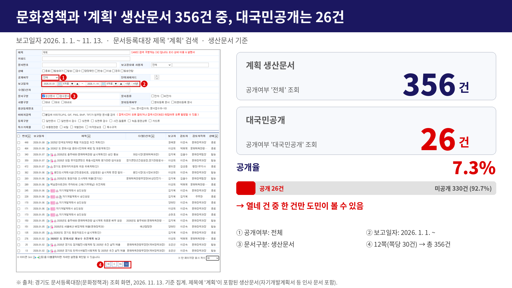
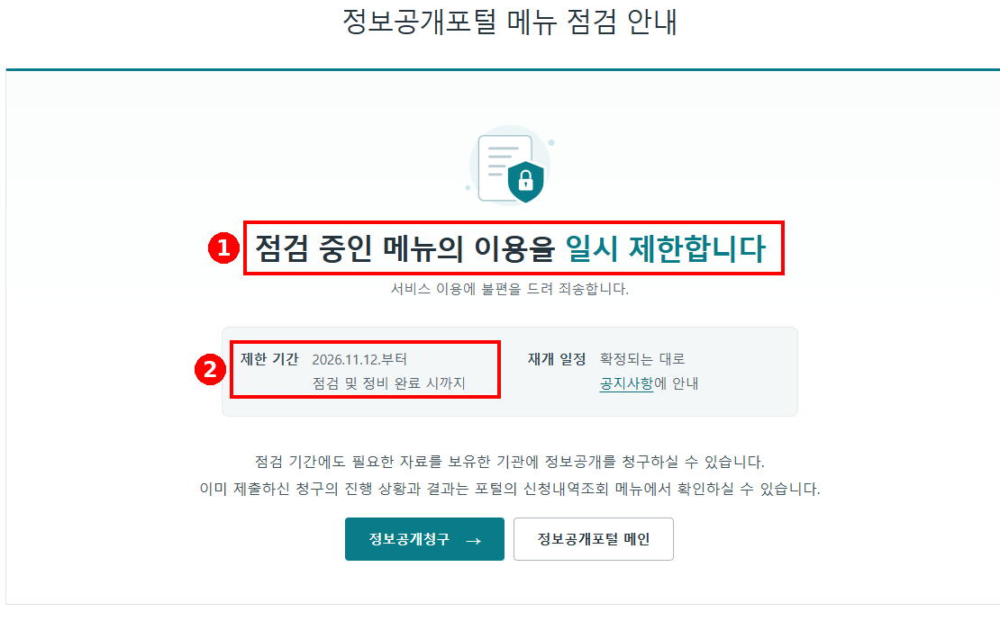
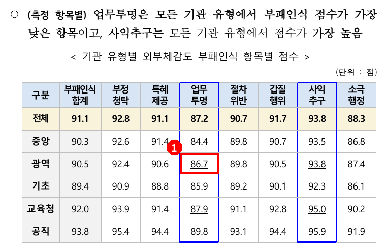
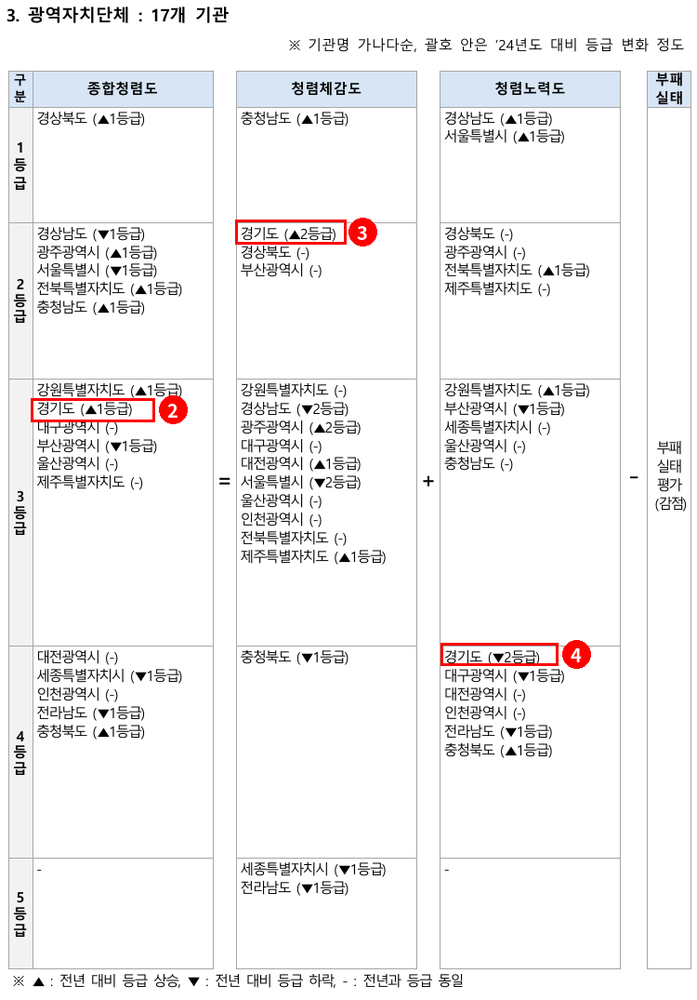

2026년 행정사무감사 질의서 (발언용 · 4분)
한 해의 시작과 끝, 계획서와 결과보고서는
왜 도민이 볼 수 없습니까
문화체육관광위원회 황은화 위원 → 문화체육관광국장(국 공통 · 7개 과)
| ① 공개 원칙과 실태 | 정보공개법 제3조·제7조, 행안부 개정안(11.6.~12.16. 입법예고) → 그런데 문화정책과 '계획' 생산문서 356건 중 대국민공개 !!26건(7.3%)!!, 콘텐츠산업과는 41.1% → 과마다 기준이 제각각 |
| ② 개인정보 노출 | 포털 공개문서 첨부파일에 주민등록번호·진단서 노출 보도 → 원문 메뉴 11.12.부터 이용 제한 → 문제는 공개가 아니라 부실한 공개구분 |
| ③ 요구자료·청렴도 | 행감 요구자료 607건 중 137건(22.7%)이 계획서·결과보고서·정산 / 청렴도 '업무투명' 항목 광역 평균 86.7점, 7개 항목 중 최저, 경기도 청렴노력도 최하위 등급(4등급), 광역 중 유일하게 2단계 하락 |
■ 발언 — 도입
국장님, 문화체육관광국 결재문서 공개에 대해 여쭙겠습니다. 올해 우리 위원회 행정사무감사 요구자료가 모두 607건인데, 이 가운데 137건이 사업계획서나 결과보고서, 정산 자료를 달라는 요구였습니다. 모두 도청 안에서 이미 결재가 끝난 문서들입니다.
[근거] 2026 행정사무감사 요구자료 마스터 색인 (문화체육관광위원회) 1 요구자료 총 607건(1차 546·2차 49·3차 12), 삭제·이관 4건 제외 시 유효 603건 2 자료명·세부요구에 사업·운영·추진·세부 계획(서), 결과보고(서), 정산을 명시한 요구 137건(22.7%) — 계획 84건, 결과보고·정산 82건(중복 29건) 3 문화체육관광국 대상 요구만 보면 201건 중 59건(29.4%) → 문제점: 이미 결재된 계획서·결과보고서가 공개돼 있었다면 상당수는 요구할 필요가 없었던 자료 ※ 출처: 「_마스터색인.xlsx」 마스터색인 시트(색인키·자료명·세부요구), 키워드 분류 집계(2026. 11. 14.) |
▶ 질문 1 — 계획서는 한 해의 시작, 결과보고서는 한 해의 끝입니다
[1번] 자료 띄워주시기 바랍니다. 정보공개법 제3조는 공공기관 정보를 적극적으로 공개하라고 되어 있고, 제7조는 사업평가 결과 같은 정보는 청구가 없어도 미리 공개하라고 되어 있습니다. 행정안전부가 이달 6일 입법예고한 개정안도 내부 검토 중이라는 이유만으로는 비공개할 수 없도록 했습니다. 사업계획서는 한 해의 시작이고, 결과보고서는 그 한 해의 끝입니다.
[2번] 자료 띄워주시기 바랍니다. 그런데 문화정책과는 올해 제목에 '계획'이 들어간 생산문서 356건 중에 대국민공개가 26건입니다. 콘텐츠산업과는 73건 중 30건이니까, 같은 국 안에서 공개율이 다섯 배 넘게 차이 납니다. 국장님, 과마다 공개 기준이 이렇게 다른 이유가 뭡니까?
▷ "과별로 업무 성격이 달라서 그렇습니다" → 그렇다면 문서 유형별로 국 공통 공개 기준부터 만들어야 하지 않겠습니까? (예비 · 시간 남을 때)
[근거 1번 자료] 「공공기관의 정보공개에 관한 법률」 제3조(정보공개의 원칙) 공공기관이 보유·관리하는 정보는 국민의 알권리 보장 등을 위하여 이 법에서 정하는 바에 따라 적극적으로 공개하여야 한다. 제7조(정보의 사전적 공개 등) ① 공공기관은 다음 각 호의 어느 하나에 해당하는 정보에 대해서는 공개의 구체적 범위, 주기, 시기 및 방법 등을 미리 정하여 정보통신망 등을 통하여 알리고, 이에 따라 정기적으로 공개하여야 한다. (1호 국민생활에 매우 큰 영향을 미치는 정책에 관한 정보 / 3호 예산집행의 내용과 사업평가 결과 등 행정감시를 위하여 필요한 정보) 행정안전부 개정안(2026. 11. 6.~12. 16. 입법예고) 비공개 5개 유형 기준 구체화 / 의사결정·내부 검토 중이라는 이유만으로 비공개 불가 / 사전공표 대상에 감사 정보, 연구용역 결과, 위원회 회의록 추가 → 문제점: 계획서·결과보고서는 사전공개 취지의 핵심 문서인데, 국 차원의 공개구분 기준이 확인되지 않음 ※ 출처: 국가법령정보센터 「공공기관의 정보공개에 관한 법률」 제3조·제7조 / 정책브리핑 2026. 11. 5. https://m.korea.kr/news/policyNewsView.do?newsId=148975104 |
[근거 2번 자료] 문화체육관광국 과별 '계획' 생산문서 공개 현황 (2026. 1. 1.~11. 13.) 
1 문화정책과 공개율 7.3% — 열네 건 중 한 건 2 콘텐츠산업과 41.1%와 약 5.6배 차이 → 공개구분이 과·담당자 판단에 맡겨져 있음 ※ 문서등록대장 제목 '계획' 검색, 생산문서 기준. 자기개발계획서 등 인사 문서가 포함되어 있어 순수 사업계획서 기준 공개율과는 차이가 있을 수 있음 ※ 출처: 경기도 문서등록대장(문화정책과·종교협력과·콘텐츠산업과) 조회 화면, 2026. 11. 13. 기준 집계 |
▶ 질문 2 — 개인정보는 열려 있고, 계획서는 닫혀 있습니다
반대 문제도 있습니다. 이달 초 정보공개포털에 공개된 문서 첨부파일에서 주민등록번호와 진단서 같은 개인정보가 그대로 노출됐다는 보도가 있었고, 행안부는 모든 공공기관에 전수 점검을 지시했습니다. [3번] 자료 보시면 포털 원문 메뉴가 11월 12일부터 지금까지 막혀 있습니다.
공개해야 할 문서는 닫아 두고, 가려야 할 개인정보는 열어 둔 겁니다. 답은 공개를 줄이는 게 아니라, 가릴 것만 제대로 가리는 부분공개입니다. 문화체육관광국 문서도 점검하셨습니까? 노출된 문서가 있었습니까?
▷ "현재 점검 중입니다" → 점검이 끝나면 노출 건수와 조치 결과를 위원회에 서면으로 보고해 주십시오. (예비 · 시간 남을 때)
[근거 3번 자료] 정보공개포털(open.go.kr) 메뉴 점검 안내 화면  1 "점검 중인 메뉴의 이용을 일시 제한합니다" 2 제한 기간 2026. 11. 12.부터 점검 및 정비 완료 시까지 — 재개 일정 미확정 3 보도: 최소 22개 기관 문서 35건 첨부파일에서 공무원·민간인 주민등록번호, 암 진단서 등 노출 → 행안부 공식 사과, 원문 다운로드 일시 중단, 전 공공기관 전수 점검 지시. 원인은 "공개 당시 비공개로 설정해야 하는데 그렇지 않아"(행안부 관계자) → 문제점: 공개구분이 양쪽으로 부실 — 공개할 문서는 닫히고, 가릴 정보는 열림 ※ 출처: 정보공개포털 메뉴 점검 안내 화면 캡처 / 경향신문 2026. 11. 5. https://khan.co.kr/article/202611051110001 |
■ 마무리 · 요구사항
공개는 일을 늘리는 게 아니라 오히려 줄여 줍니다. 계획서와 결과보고서가 공개돼 있으면 의회도 같은 자료를 해마다 다시 요구할 필요가 없습니다.
[4번] 자료 띄워주시기 바랍니다. 국민권익위원회 종합청렴도에서 '업무처리 기준과 절차의 투명한 공개' 항목은 광역자치단체 평균 86.7점으로, 일곱 개 항목 중에 가장 낮습니다. 경기도는 작년 청렴노력도가 광역 최하위 등급인 4등급이었고, 두 단계나 떨어진 곳은 경기도뿐입니다. 공개를 넓히는 게 청렴도를 올리는 출발점입니다.
[근거 4번 자료] 국민권익위원회 「2025년도 행정기관·공직유관단체 종합청렴도 평가 결과」  1 외부체감도 부패인식 7개 항목 중 업무투명(업무처리 기준·절차의 투명한 공개)이 모든 기관 유형에서 최저 — 광역자치단체 86.7점(최고 사익추구 93.8점)  2 경기도 종합청렴도 3등급(▲1) / 3 청렴체감도 2등급(▲2) 4 청렴노력도 4등급(▼2) — 2025년 광역 청렴노력도는 5등급 해당 기관이 없어 4등급이 최하위 등급, 2단계 하락은 17개 광역 중 경기도 유일 ※ 업무투명 항목 비중: 외부체감도 부패인식의 12.7%, 청렴체감도의 70.4%가 외부체감도, 종합청렴도의 60%가 청렴체감도 → 종합청렴도 기여 약 5.4%. 경기도의 항목별 점수는 비공개(권익위 기관별 결과보고서로만 통보) → 문제점: 공개·투명성은 청렴도 최저 항목이자 경기도 청렴노력도 하락 국면에서 개선 여지가 가장 큰 영역 ※ 출처: 국민권익위원회 「2025년도 행정기관·공직유관단체 종합청렴도 평가 결과」(2025. 12.) 32쪽(항목별 점수)·120쪽(광역자치단체 등급), 3~4쪽(평가모형·가중치) |
세 가지 요청드리겠습니다.
하나, 계획서와 결과보고서는 개인정보만 가리고 공개하는 국 기준을 만들어 내년 1월 결재분부터 적용해 주십시오.
둘, 개인정보 노출 점검 결과와 조치 내용을 12월 중에 서면으로 보고해 주십시오.
셋, 올해 요구자료 가운데 공개로 대신할 수 있는 문서는 내년 행감 전까지 공개해 주십시오.
참고: 예상 소요시간
| 구간 | 발언(음절) | 화면 | 답변 | 소계 |
| 도입 | 106 · 21초 | - | - | 21초 |
| 질문 1 | 262 · 52초 | 10초 | 20초 | 1분 22초 |
| 질문 2 | 199 · 40초 | 5초 | 20초 | 1분 05초 |
| 마무리 · 청렴도 · 요구사항 | 320 · 64초 | 5초 | - | 1분 09초 |
| 합계 | 887 · 2분 57초 | 20초 | 40초 | 3분 57초 |
※ 분당 300음절, 질문당 최소 답변 20초, 화면 전환 1회 5초 기준. 예비 재질의(▷)는 제외. 4분 이내.